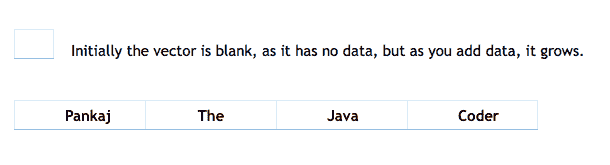
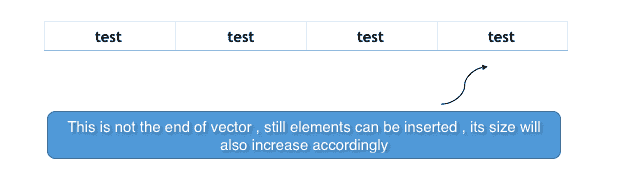
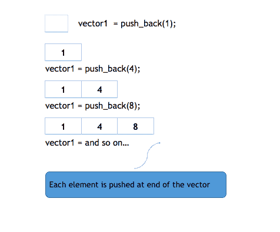
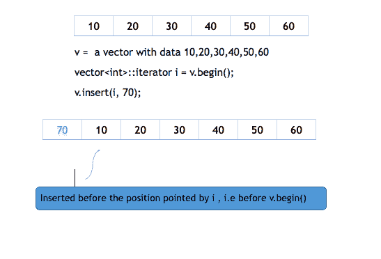
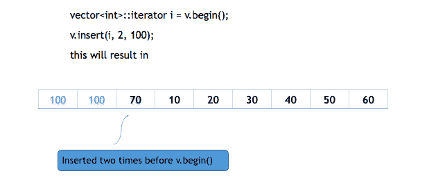
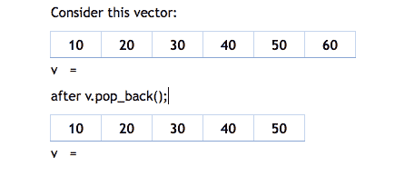

STL 中的向量容器
原文：https://www.studytonight.com/cpp/stl/stl-container-vector
当我们必须实现像数组这样的顺序数据结构时，一个数组工作得很好，除了它是静态的，也就是说，我们必须在它的初始化期间定义它的最大大小，并且它不能包含大于它的最大大小的元素。现在假设，如果在程序执行期间，我们必须存储超过其大小的元素，或者如果我们正在读取元素的输入流，并且我们不知道元质数量的上限，则很有可能出现 index_out_bound 异常或程序意外终止。
我们可以做一件事，用编译器允许的最大尺寸初始化数组，即每个数组10^6个元素，但这是一种非常消耗空间的方法，如果要输入的元质数量太少，就会浪费空间，因此这种方法在编程中从未使用过。
上述问题的解决方案是动态数组！它们具有动态大小，即它们的大小可以在运行时改变。容器库提供向量来复制动态数组。
创建向量的语法是:vector< object_type > vector_name;
例如:
#include <vector>
int main()
{
std::**vector**<int> my_vector;
}
Vector 是一个动态数组，在声明过程中不需要大小，因此上面的代码将创建一个空白向量。有很多方法可以初始化一个向量，
#include <vector>
int main()
{
std::**vector**<string> v {"Pankaj" ,"The" ,"Java" ,"Coder"};
}

请注意，这种类型的初始化仅适用于 C++ 11 及更高版本。您也可以根据其他向量的范围初始化向量，例如:
#include <vector>
int main()
{
std::**vector**<string> v(v1.begin(), v1.end());
}
上面的代码通过由 v1.begin()和 v2.end()返回的迭代器所指向的元素来初始化向量，begin()和 end()是我们用数组研究过的相同函数，它们对向量的工作方式相同。
您也可以用一个元素初始化一个向量一定次数，例如:
#include <vector>
int main()
{
std::**vector**<string> v(4 , "test");
}

这些是初始化向量的方法之一，但是请记住，使用另一个向量或直接使用元素来初始化向量并不会限制它的大小，它的大小将始终是动态的，并且在需要时可以在向量中插入更多的元素。
向量的成员函数
以下是 STL 中矢量容器最常用的一些函数:
push_back功能
push_back()用于在向量末尾插入一个元素。如果 push_back()中作为参数传递的对象类型与向量的类型不同，或者不可相互转换，则会引发异常。
下图将显示 push_back()的工作原理:

#include <iostream>
#include <vector>
using namespace std;
int main()
{
**vector**<int> v;
v.**push_back**(1); *//insert 1 at the back of v*
v.**push_back**(2); *//insert 2 at the back of v*
v.**push_back**(4); *//insert 3 at the back of v*
for(vector<int>::iterator i = v.begin(); i != v.end(); i++)
{
cout << *i <<" "; *// for printing the vector*
}
}
1 2 4
insert功能
insert(itr, element)方法将向量中的元素插入迭代器 itr 指向的位置之前。
下图将展示插入是如何工作的:

插入函数可以被第三个参数重载，计数也一样。此 count 参数定义元素在指向位置之前插入的次数。

这个方法也可以用来插入给定范围内任何其他向量的元素，由两个迭代器指定，定义范围的起点和终点。
v.insert(i, v2.begin(), v2.end());
上面的代码将在 i 所指向的索引之前插入从 v2.begin()到 v2.end()的元素。
pop_back功能
pop_back()用于从向量中移除最后一个元素。它将向量的大小减少了一。
下面是一个例子:

#include <iostream>
#include <vector>
using namespace std;
int main()
{
**vector**<int> v1 {10,20,30,40};
v1.**pop_back**();
vector<int>::iterator it;
for(it = v.begin(); it != v.end(); it++)
{
cout << *it <<" "; // for printing the vector
}
}
10 20 30
erase功能
erase(itr_pos)移除迭代器指向的元素。erase 方法也可以重载一个额外的迭代器，指定要移除的范围的终点，即erase(itr_start, itr_end)。
以下代码将说明擦除:
#include <iostream>
#include <vector>
using namespace std;
int main()
{
vecto<int>v1 {10,20,30,40};
vector<int>iterator:: it = v.begin();
v.**erase**(it); //removes first element from the vector
v.**erase**(v1.begin(), v1.end() - 2 )
/*removes all the elements except last two */
for(it = v.begin(); it != v.end(); it++)
{
cout << *it <<" "; // for printing the vector
}
}
30 40
resize功能
resize(size_type n, value_type val)方法将向量调整到 n 元素。如果向量的当前大小大于 n ，则从向量中移除尾部元素，如果当前大小小于nn，则在向量后面插入额外的 val 元素。
例如，如果现在向量的大小为 4，元素为{10，20，30，40}，我们使用resize方法将其大小调整为 5。那么默认情况下，值为 0 的第五个元素将被插入到矢量中。我们可以指定数据不为零，在调用 resize 方法时将其显式地称为 val 。
swap功能
这个方法交换两个向量的值。
如果我们有两个向量 v1 和 v2，我们想交换其中的元素，你只需要调用v1.swap(v2)，这将交换两个向量的值。
clear功能
该方法清除整个向量，从向量中移除所有元素，但不删除向量。
语法:clear()
对于向量 v ，v.clear()会清除它，但不会删除它。
size功能
这个方法返回向量的大小。
empty功能
如果向量为空，此方法返回 true，否则返回 false。
capacity功能
此方法根据分配给向量的内存返回可插入向量的元质数。
at功能
这个方法在向量的情况下和在数组的情况下一样有效。vector_name.at(i)返回向量向量 _ 名称中带有索引的处的元素。
front和back功能
vector_name.front()重新运行向量前面的元素(即最左边的元素)。而vector_name.back()返回向量后面的元素(即最右边的元素)。